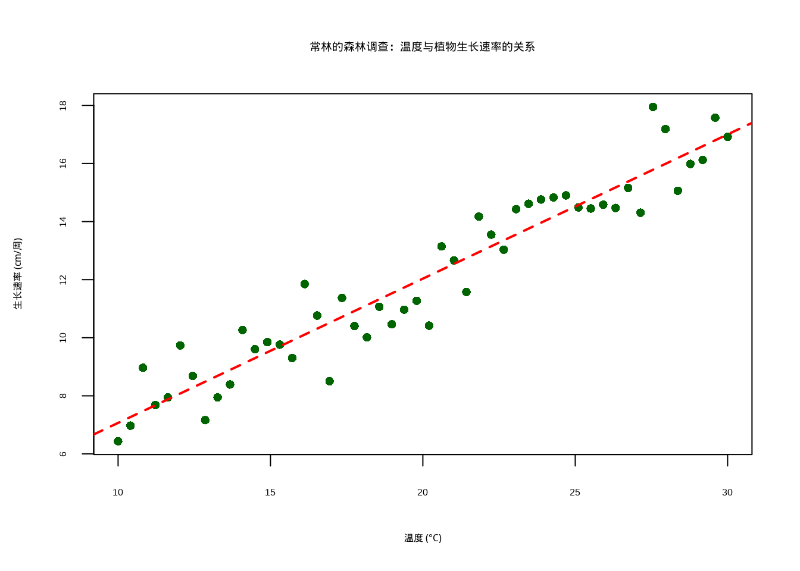
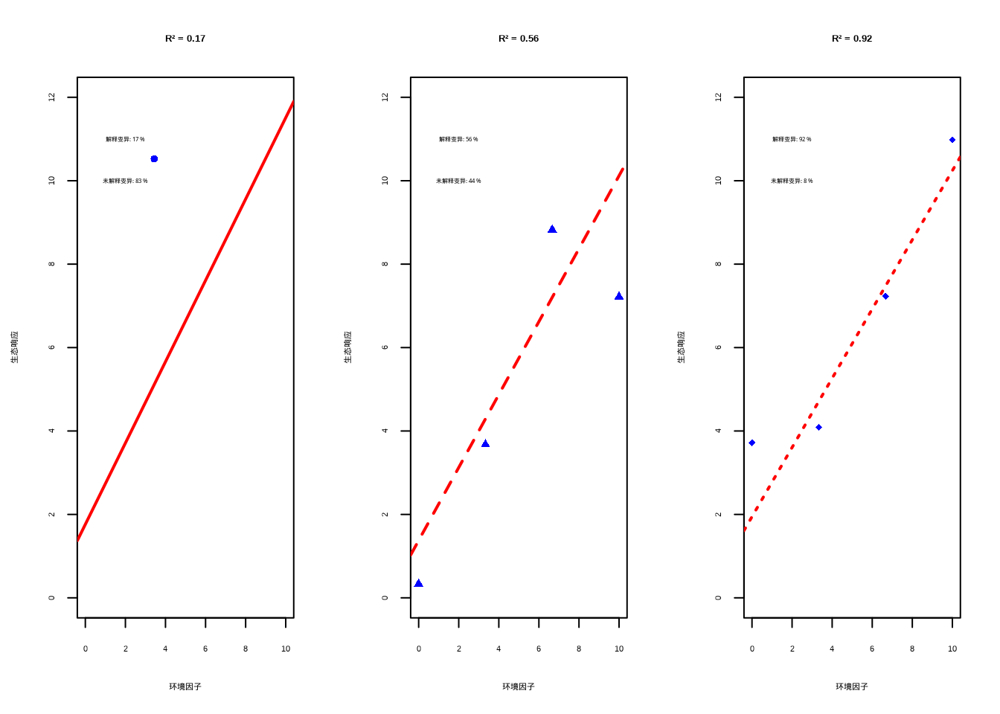
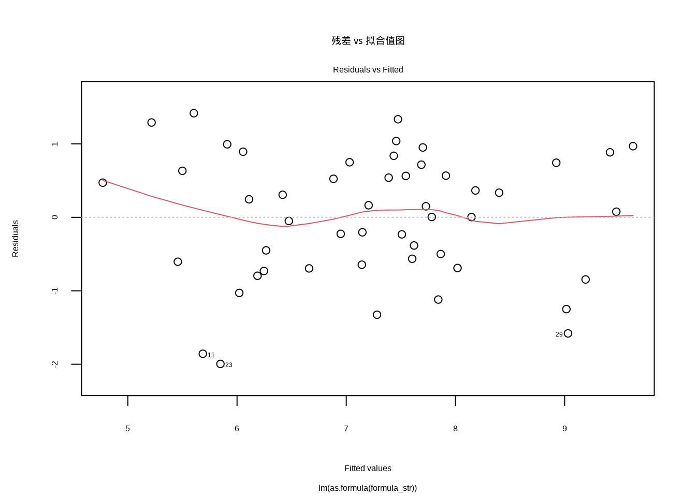
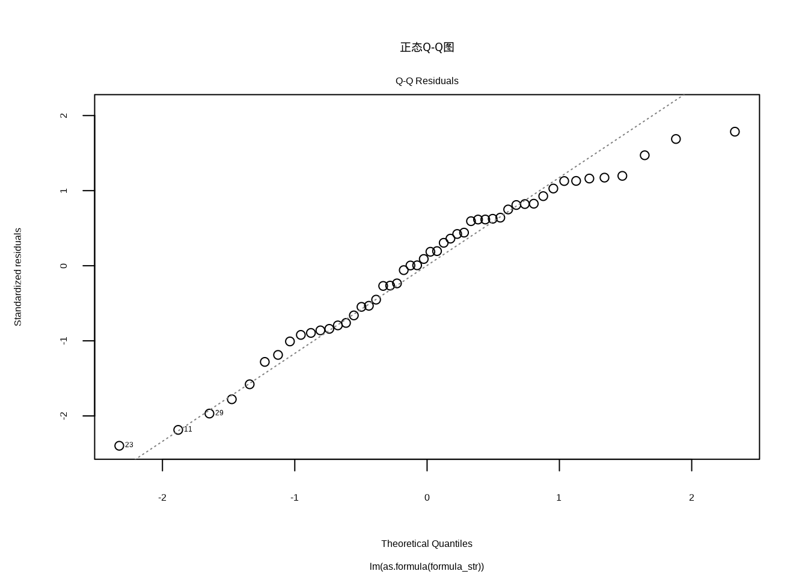
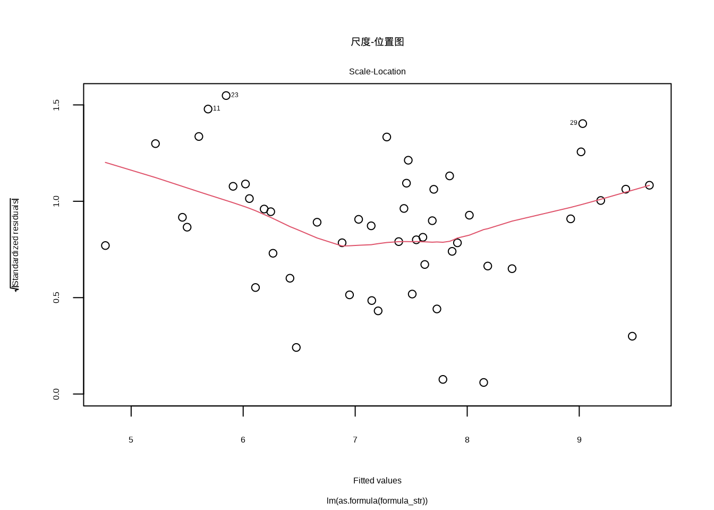
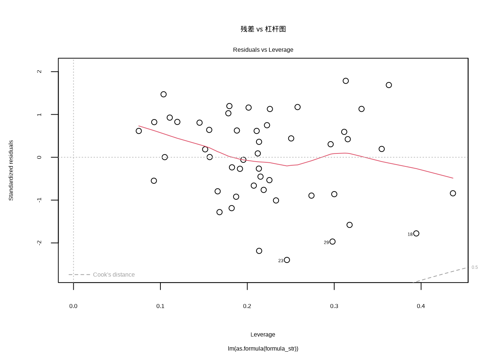
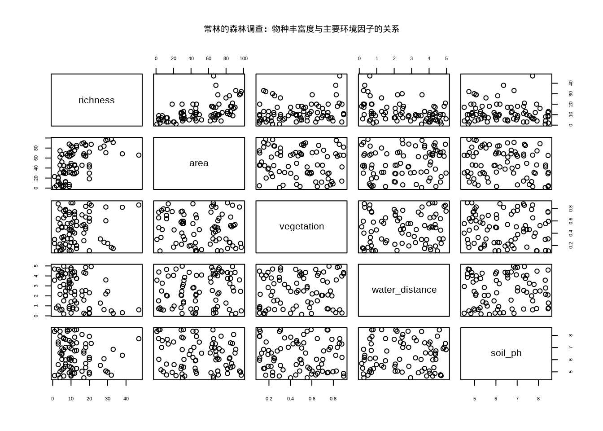
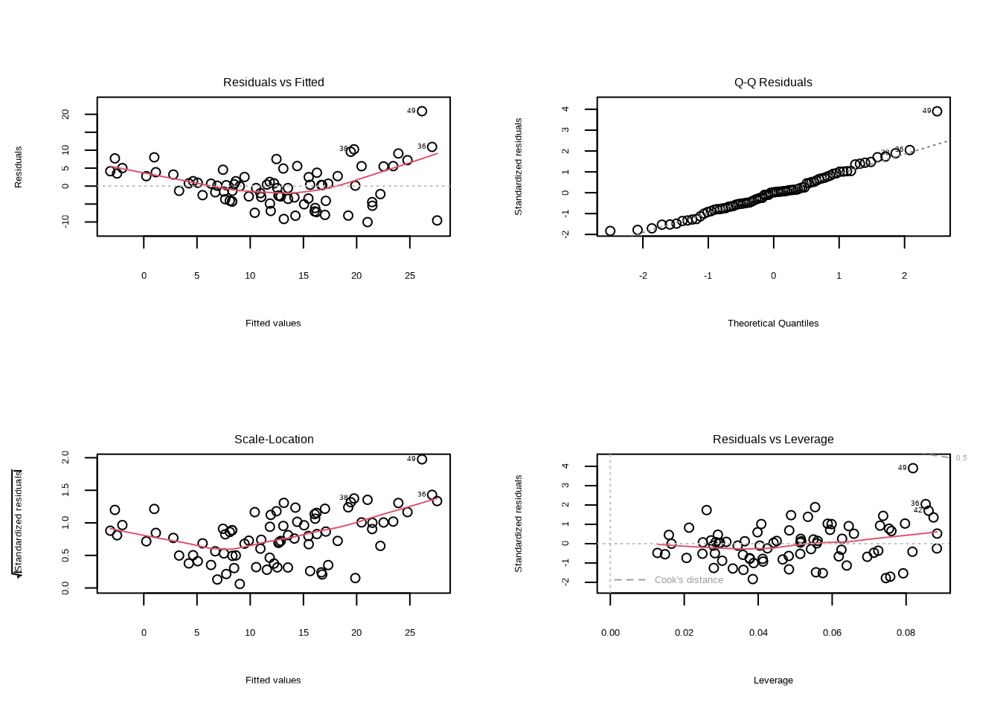
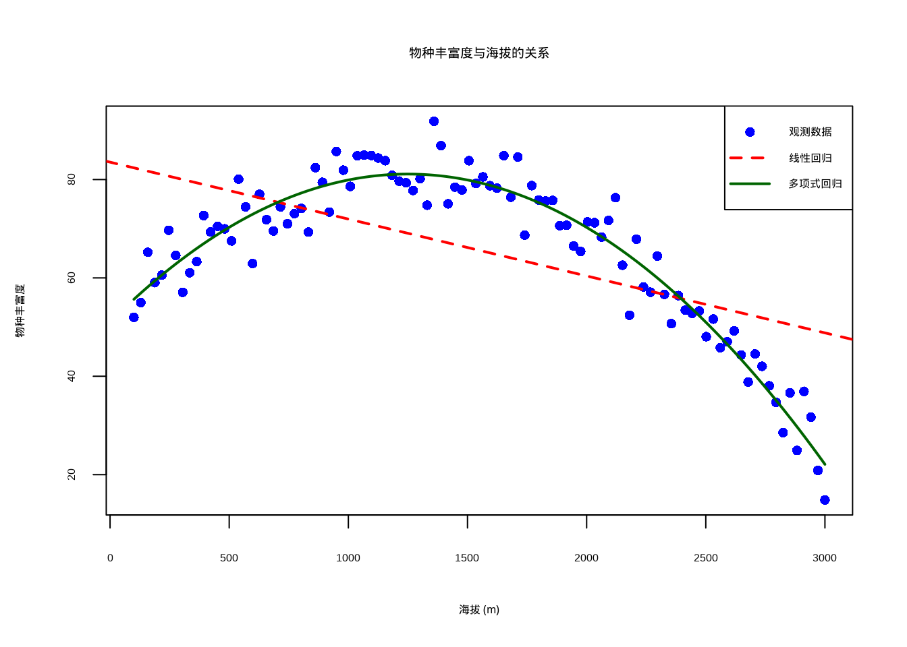

7 回归建模：从线性模型到通用函数逼近
7.1 本章学习目标
知识目标：学完本章后，你能回答：回归系数\(\beta_1\)的真正含义是什么，为什么其解释必须依赖”在其他条件不变的情况下”这一严格假设？残差图、Q-Q图和Cook’s距离分别用于诊断回归模型的哪些前提假设？什么是多重共线性，方差膨胀因子（VIF）如何量化自变量之间的信息冗余程度？
技能目标：你能独立用R的lm()函数建立简单线性回归和多元回归模型，正确解读summary()输出中的系数估计、标准误、t值、p值和R²；通过绘制残差vs拟合值图、Q-Q图、Scale-Location图进行系统的回归诊断；用多项式回归处理非线性的生态关系，并通过交叉验证或调整R²选择合适的多项式阶数。
AI素养目标：你能理解”线性回归等价于没有隐藏层和激活函数的单层神经网络”，回归系数\(\beta\)就是网络的权重，最小二乘法等价于使用均方误差损失函数的梯度下降训练。理解”双重下降”现象：当模型参数数量超过训练样本数时，测试误差可能先上升再下降，这颠覆了传统统计学习中”偏差-方差权衡”的经典直觉。你将能够向AI描述你的回归分析目标和数据特征，让AI辅助你检查模型诊断图，但你自己需要负责判断模型是否满足前提假设。
7.2 引言
年轻的生态学家常林站在云雾缭绕的山地森林中，手中拿着刚刚完成的野外调查数据。她接到一个重要任务：研究气候变化对这片珍贵森林生态系统的影响，为保护区管理提供科学依据。面对复杂的环境数据和生态关系，她需要一种强大的工具来理解这些模式背后的规律。
统计建模，特别是线性回归模型，将成为她的数学望远镜，让她能够穿透自然界的混沌，看清生态现象背后的基本规律。通过构建数学模型，她不仅能够描述生态过程，更能识别关键驱动因素并进行科学预测，为生态管理和保护提供坚实的决策支持。
7.2.1 为什么需要学习统计建模与预测？
就像常林面临的挑战一样，作为生态学本科生，我们可能会好奇：在野外调查和实验室研究之外，为什么还需要掌握统计建模与预测这样的技术性技能？实际上，在现代生态学研究中，统计建模已经成为理解复杂生态现象、应对环境挑战和推动科学决策的核心工具。
在这里，我们需要特别强调建模与预测之间的密切关系：只有建立了可靠的统计模型，我们才能进行科学的预测。建模是理解生态过程的基础，而预测则是建模的最终目的和应用。一个良好的生态模型不仅能够描述当前观测到的生态现象，更重要的是能够预测在未知条件下生态系统可能发生的变化。这种预测能力使得生态学从描述性科学转变为预测性科学，为生态保护和环境管理提供了前瞻性的决策支持。
首先，统计建模能够显著提升我们的科学研究能力。生态系统中充满了复杂的相互作用和动态变化，仅凭直观观察往往难以揭示其内在规律。通过构建数学模型，我们可以从纷繁复杂的生态现象中提取出本质特征。
想象一下，当常林面对这片复杂的山地森林时，如何理解温度变化对树木生长的影响？通过构建线性回归模型，她可以量化温度与生长速率的关系；使用多元回归模型，能够同时考虑多个环境因子的综合效应；构建多项式回归模型，则可以描述物种丰富度随海拔变化的非线性模式。这些模型不仅帮助她理解当前的生态格局，更重要的是让她能够预测未来气候变化可能带来的影响。
其次，统计建模为生态保护决策提供了坚实的科学依据。在当今人类活动深刻影响地球生态系统的背景下，有效的保护措施需要基于科学的预测和评估。例如，通过预测气候变化对珊瑚礁生态系统的影响，我们可以更科学地指导海洋保护区的选址；通过评估土地利用变化对鸟类迁徙路线的影响，能够优化生态廊道的设计；通过模拟入侵物种的扩散路径，可以制定更加精准的早期预警和防控措施。
在应对环境变化挑战方面，统计建模更是发挥着不可替代的作用。气候变化、土地利用变化、污染物扩散等全球性环境问题，都需要我们能够预测其长期影响。统计模型让我们能够预见海平面上升对红树林分布的影响，模拟干旱加剧对草原生态系统碳循环的冲击，评估污染物扩散对水生生态系统的长期影响。这种预测能力不仅帮助我们理解环境变化的后果，更重要的是为制定适应性管理策略提供了时间窗口。
从职业发展的角度来看，掌握统计建模技能将为我们打开更广阔的职业前景。就像常林一样，在科研机构，我们可以从事生态模型开发和数据分析工作；在环保部门，可以参与环境影响评估和政策制定；在咨询公司，可以提供专业的生态风险评估和规划建议；在自然保护区，可以开展科学的生态监测和适应性管理。随着大数据和人工智能技术的发展，具备建模能力的生态学家在就业市场上越来越受到青睐。
更重要的是，学习统计建模能够培养我们的系统思维能力。生态学研究的核心在于理解系统层面的规律，而建模过程正是训练这种系统思维的绝佳方式。通过建模，我们将学会理解生态系统的非线性响应和反馈机制，识别生态过程的关键阈值和临界点，评估管理措施的长期效应和意外后果。
具体来说，当我们学习线性回归时，我们不仅是在学习一种统计方法，更是在学习如何量化变量间的关系；当我们掌握广义线性模型时，是在学习如何处理生态学中常见的非正态数据；当我们接触混合效应模型时，是在学习如何正确分析具有层次结构的数据；当我们了解机器学习算法时，是在学习如何从大数据中发现复杂的生态模式。
通过本课程的学习，我们将建立起从简单线性回归到复杂机器学习模型的完整知识体系，掌握模型选择、评估和预测的基本技能。这些技能不仅为我们未来的生态学研究和实践工作奠定坚实基础，更重要的是培养了我们用数学语言描述生态现象、用科学方法解决生态问题的能力。在生态学日益数据化和定量化的今天，统计建模与预测已经成为每一位生态学专业学生必备的核心素养。
现在，让我们跟随常林的研究历程，从最简单的线性回归开始，逐步探索统计建模在生态学中的应用。简单线性回归是生态学研究中常用的统计方法，用于描述两个连续变量之间的线性关系。在常林的研究中，她首先需要了解温度如何影响树木生长速率，这正是简单线性回归的典型应用。
7.3 线性回归模型：生态关系的数学表达
常林开始分析她的第一组数据：温度与树木生长速率的关系。线性回归模型为她提供了一种强大的数学语言来描述这种生态关系。这种模型的基本公式为：\[y = \beta_0 + \beta_1 x + \varepsilon\]
这个简洁的公式如同她的数学望远镜，让她能够穿透自然界的复杂性，看清生态现象背后的基本规律。
让我们来详细解释这个公式的每个部分，这些数学符号如同常林研究中的语言密码，帮助她精确描述森林生态系统的规律:
- y是因变量（响应变量），在常林的研究中就是树木生长速率。它代表着生态系统的响应，是她试图理解和预测的核心。
- x是自变量（解释变量），在常林的研究中就是温度。这个因子如同森林生态系统的调节器，影响着树木的生长。
- \(\beta_0\)是截距项，表示当自变量\(x\)为0时，因变量\(y\)的期望值。在常林的研究中，这表示在温度为0℃时的树木生长速率，反映了森林生态系统的基线状态。
- \(\beta_1\)是斜率系数，表示自变量\(x\)每变化一个单位，因变量\(y\)平均变化多少单位。这是线性回归的核心，告诉常林温度与生长速率关系的强度和方向。
- \(\varepsilon\)是误差项，代表模型无法解释的随机变异。在生态学中，这反映了自然界的随机性、测量误差以及其他未考虑因素的影响，提醒常林生态系统的复杂性永远超出模型的简化描述。
7.4 生态关系的最小二乘估计
常林需要找到最能代表温度与生长速率关系的直线。最小二乘法是线性回归中估计参数\(\beta_0\)和\(\beta_1\)的核心方法。它的基本思想是找到一条直线，使得所有数据点到这条直线的垂直距离（残差）的平方和最小。这种方法如同在生态数据的星空中寻找最亮的轨迹线，让她的模型与观测数据达到最佳契合。
在生态学研究中，最小二乘估计具有重要的实际意义。当常林收集了野外调查数据后，她希望找到最能代表这些数据真实关系的直线。在研究森林中树木胸径与树高的关系时，最小二乘法能够给出最符合观测数据的回归线，帮助她理解树木生长的基本规律。
7.4.2 lm()函数的基本语法
其中最重要的参数包括：
- formula是模型公式，指定因变量和自变量的关系，基本格式为
因变量 ~ 自变量，例如height ~ dbh表示树高对胸径的回归，多个自变量使用height ~ dbh + age + soil_type格式。 - data参数指定包含变量的数据框，用于避免使用
$符号直接引用变量，例如data = forest_data。 - subset参数用于指定用于拟合的子集，例如只分析橡树数据：
subset = species == "橡树"。 - weights参数用于指定观测值的权重，主要用于加权最小二乘法。
- na.action参数处理缺失值的方法，默认是
na.omit，自动删除含有缺失值的观测。
7.4.3 模型公式的详细说明
常林需要理解模型公式的语法。模型公式是lm()函数的核心，它使用特殊的语法来描述变量间的关系。对于简单线性回归，基本的公式格式是：
在生态学研究中，正确的模型公式设计至关重要。在常林研究植物生长速率与温度的关系时，她使用growth_rate ~ temperature这样的公式。
7.4.4 lm()函数的返回对象
当常林调用lm()函数后，它会返回一个包含丰富信息的列表对象。理解这个对象的结构对于后续分析非常重要：
# 拟合模型
model <- lm(growth_rate ~ temperature, data = eco_data)
# 查看对象类型
class(model)
# 查看对象结构
str(model)lm对象包含以下重要组件：
- coefficients：回归系数向量，包含截距和斜率
- residuals：残差向量（观测值 - 预测值）
- fitted.values：拟合值向量
- rank：模型矩阵的秩
- df.residual：残差自由度
- call：函数调用信息
- terms：模型公式信息
- model：使用的数据
7.4.5 提取回归结果的常用函数
R提供了多个函数来提取和分析回归结果：
# 基本摘要信息
summary(model)
# 提取系数
coef(model)
coefficients(model)
# 提取残差
residuals(model)
resid(model)
# 提取拟合值
fitted(model)
fitted.values(model)
# 模型诊断图
plot(model)
# 方差分析表
anova(model)
# 置信区间
confint(model)
# 预测新值
predict(model, newdata)# 模型拟合：使用lm()函数进行线性回归
model <- lm(growth_rate ~ temperature, data = forest_survey_data)
# 显示模型摘要，包含系数估计和统计显著性
knitr::kable(summary(model)$coefficients,
caption = "森林调查温度与植物生长速率的关系 - 系数估计",
booktabs = TRUE) %>%
kableExtra::kable_styling(latex_options = c("hold_position"))| Estimate | Std. Error | t value | Pr(>|t|) | |
|---|---|---|---|---|
| (Intercept) | 2.1009145 | 0.4681754 | 4.487452 | 4.5e-05 |
| temperature | 0.4966745 | 0.0224552 | 22.118467 | 0.0e+00 |
为了直观展示温度与植物生长速率之间的关系，我们生成了散点图并添加了线性回归线（见7.1）。该图形化地呈现了常林森林调查数据的核心发现：随着温度从10℃升高到30℃，植物生长速率呈现明显的正相关趋势。图中深绿色的散点代表实际观测数据，红色直线为基于最小二乘法拟合的线性回归线，清晰地展示了温度对生长速率的正向影响模式。这种可视化方法不仅验证了线性关系的存在，还为理解生态系统中环境因子与生物响应之间的关系提供了直观依据。

图7.1: 温度与植物生长速率的散点图及线性回归拟合线。
为了量化温度与植物生长速率之间的关系，我们使用R语言的lm()函数构建线性回归模型。lm()函数（linear model）是R语言中用于拟合线性模型的核心函数，它通过最小二乘法寻找最佳拟合直线。具体来说，lm()函数会寻找一条直线，使得所有数据点到这条直线的垂直距离（即残差）的平方和最小。
在生态学应用中，lm()模型帮助我们：
- 估计关系强度：通过斜率系数精确量化温度每变化1°C对生长速率的影响程度
- 检验统计显著性：通过t检验和p值判断观察到的关系是否具有统计学意义
- 预测未知值：基于建立的模型预测在特定温度条件下的生长速率
- 评估模型拟合度：通过R²值衡量模型解释数据变异的比例
模型的具体参数估计结果如7.1所示，其中包含了截距项和斜率系数的估计值、标准误、t统计量和p值。
7.4.6 理解summary()函数的输出
summary()函数提供了最全面的模型信息，理解这些输出对于正确解释生态学关系至关重要。
残差 (Residuals)是观测值与模型预测值之间的差异，计算公式为残差 = 实际观测值 - 模型预测值。五数概括显示残差分布特征，包括最小值、第一四分位数、中位数、第三四分位数和最大值。从生态学意义来看，残差反映了模型无法解释的随机变异，包括测量误差、未考虑的环境因子以及生态系统的自然随机性。理想情况下，残差应该随机分布在0附近，没有明显的模式。
系数估计 (Coefficients)包括截距项和斜率系数。截距项表示当所有自变量为0时因变量的期望值，而斜率系数表示自变量每变化1个单位，因变量平均变化的量。每个系数包含估计值、标准误、t值和p值。在生态学解释中，例如在温度与生长速率的关系中，斜率系数0.5表示温度每升高1°C，生长速率平均增加0.5单位。
决定系数 (Multiple R-squared)表示模型能够解释的因变量变异比例，计算公式为R² = 1 - (残差平方和 / 总平方和)。取值范围从0到1，R²=0.65表示模型解释了65%的物种丰富度变异。这个指标具有重要的生态学意义，衡量模型捕捉生态关系的能力。图7.2直观展示了不同R²值对应的拟合效果差异。

图7.2: 不同R²值的拟合效果对比：左(R²=0.1)弱、中(R²=0.5)中等、右(R²=0.9)强。
## === 不同R²值的生态学解释 ===
##
## R² = 0.1 (左图): 模型只能解释10%的变异，表明环境因子对生态响应的影响很弱，
## 大部分变异由其他未考虑因素决定
##
## R² = 0.5 (中图): 模型解释了50%的变异，表明环境因子是重要的驱动因素，
## 但仍有相当一部分变异需要其他解释
##
## R² = 0.9 (右图): 模型解释了90%的变异，表明环境因子是生态响应的主要决定因素，
## 模型具有很强的预测能力调整后的决定系数 (Adjusted R-squared)
- 对R²的修正，考虑了模型中自变量的数量
- 公式：调整R² = 1 - [(1-R²)(n-1)/(n-p-1)]，其中n是样本量，p是自变量个数
- 为什么需要两个值？：R²总是随着变量增加而增加，即使添加无关变量；调整R²惩罚模型复杂度，只有真正改善模型的变量才会提高调整R²
- 在生态学中，调整R²更可靠，避免过度拟合
# 模型拟合：拟合不同复杂度的模型
models <- list()
r2_values <- numeric(10)
adj_r2_values <- numeric(10)
# 拟合从1到10个变量的模型
for (i in 1:10) {
# 构建模型公式
formula_str <- paste("y ~", paste(paste0("x", 1:i), collapse = " + "))
# 拟合线性回归模型
model <- lm(as.formula(formula_str), data = demo_data)
# 存储模型和统计量
models[[i]] <- model
r2_values[i] <- summary(model)$r.squared
adj_r2_values[i] <- summary(model)$adj.r.squared
}我们使用R语言的plot(model, which = 1)命令生成残差 vs 拟合值图（见7.3），这是线性回归诊断中最重要的图形之一。该命令通过which = 1参数指定生成第一个诊断图，其中横轴显示模型的拟合值（预测值），纵轴显示对应的残差（观测值与预测值之差）。在生态学建模中，这个图形帮助我们验证两个关键假设：线性关系假设（残差应随机分布在0附近）和同方差性假设（残差的变异程度应保持恒定）。通过观察残差的分布模式，我们可以判断模型是否充分捕捉了生态变量之间的真实关系。

图7.3: 残差 vs 拟合值图：用于检查线性性和同方差性假设。
残差 vs 拟合值图主要用于检查线性性和同方差性两个重要假设。在理想情况下，残差应该随机分布在水平线y=0周围，没有任何明显的模式。如果残差呈现U形或倒U形分布，这往往暗示着非线性关系的存在。例如，在研究植物生长与温度的关系时，如果存在最适温度范围，残差就可能呈现U形模式。另一方面，如果残差随着拟合值的增大而扩散，形成所谓的”喇叭形”模式，这表明存在异方差性问题。在生态学中，这种异方差性现象十分常见，比如物种丰富度在资源丰富的地区变异较小，而在资源贫瘠的地区变异较大。
我们使用plot(model, which = 2)命令生成正态Q-Q图（见7.4），这是检验残差正态性的标准工具。该命令通过which = 2参数指定生成第二个诊断图，其中横轴显示理论正态分布的分位数，纵轴显示标准化残差的分位数。在生态学建模中，这个图形帮助我们验证线性回归的关键假设之一：残差的正态性。理想情况下，所有点应该大致沿着45度对角线分布，轻微的尾部偏离通常是可以接受的，但系统性偏离（如S形或弯曲模式）则表明残差不服从正态分布，这可能影响统计推断的可靠性。

图7.4: 正态Q-Q图：用于检查残差的正态性假设。
正态Q-Q图专门用于评估残差的正态性。理想情况下，标准化残差应该大致沿着45度对角线分布。轻微的尾部偏离通常是可以接受的，但如果出现系统性偏离，特别是S形或弯曲模式，就表明残差不服从正态分布。生态学数据经常面临正态性挑战，特别是计数数据（如个体数量）和比例数据（如覆盖率）。当发现严重的非正态性时，我们需要考虑数据变换或使用更适合的统计模型。
尺度-位置图提供了另一种检查同方差性的视角。这个图展示了标准化残差的平方根与拟合值的关系。理想情况下，点应该围绕水平线随机分布。如果出现明显的上升或下降趋势，就表明存在异方差性。在生态学研究中，这种异方差性往往与环境条件的极端性相关。例如，在干旱胁迫严重的地区，植物生长速率的变异可能显著增大；而在适宜的环境中，变异相对较小。
图7.5展示了尺度-位置图的生成代码和结果。代码中plot(model, which = 3)命令调用R的绘图函数，其中which = 3参数指定生成尺度-位置图。这个图将标准化残差的平方根（√|标准化残差|）作为纵轴，拟合值作为横轴，用于检测残差的方差是否随着拟合值的变化而变化。

图7.5: 尺度-位置图：用于检查同方差性假设。
残差 vs 杠杆图帮助我们识别异常值和有影响的观测点。在这个图中，我们需要特别关注那些同时具有高杠杆和大残差的点。高杠杆点是指在自变量空间中位置异常的观测，它们对回归线的位置有较大影响；大残差点则是模型预测效果很差的观测。在生态调查中，这些有影响的点可能代表着特殊的生境类型或异常的环境条件，需要仔细检查其生态学合理性。Cook’s距离等高线提供了判断观测点影响程度的参考标准。
图7.6展示了残差 vs 杠杆图的生成代码和结果。代码中plot(model, which = 5)命令调用R的绘图函数，其中which = 5参数指定生成残差 vs 杠杆图。这个图将标准化残差作为纵轴，杠杆值作为横轴，同时显示Cook’s距离等高线，用于识别对模型有过度影响的观测点。

图7.6: 残差 vs 杠杆图：用于识别异常值和有影响的观测点。
7.4.7 模型质量的综合评估
一个良好的回归模型应该在所有诊断图中都表现出令人满意的特征。在残差 vs 拟合值图中，我们希望看到残差随机分布在零线周围，没有任何明显的模式。这种随机分布表明模型已经充分捕捉了数据中的线性趋势，剩余的是纯粹的随机变异。在正态Q-Q图中，点应该基本沿着对角线分布，轻微的尾部偏离通常是可以接受的，但系统性偏离则需要引起重视。尺度-位置图应该显示水平趋势，表明残差的方差在不同拟合值水平上保持相对恒定。最后，在残差 vs 杠杆图中，所有观测点都应该位于Cook’s距离等高线之内，表明没有单个观测对模型结果产生过度影响。
相反，当模型存在问题时，诊断图会显示出明显的警示信号。非线性关系通常表现为残差的U形或倒U形分布，表明真实关系可能比线性模型所能描述的更为复杂。严重的异方差性会在残差 vs 拟合值图和尺度-位置图中表现为明显的”喇叭形”或趋势性模式，这意味着模型的预测精度在不同区域存在系统性差异。严重的非正态性在Q-Q图中表现为系统性偏离对角线，这可能影响统计推断的可靠性。有影响的异常值在残差 vs 杠杆图中表现为超出Cook’s距离等高线的点，这些点可能对模型结果产生不成比例的影响。
7.4.8 生态学诊断问题的应对策略
在生态学研究中，我们经常面临各种诊断挑战，但幸运的是，对于每个常见问题都有相应的解决方案。当遇到非线性关系时，我们可以考虑使用多项式回归来捕捉曲线趋势，或者采用更加灵活的广义可加模型，后者不需要预先指定函数形式。对于异方差性问题，加权最小二乘法可以根据观测值的可靠性赋予不同权重，或者通过适当的数据变换（如对数变换、平方根变换）来稳定方差。
当数据严重偏离正态分布时，广义线性模型提供了更加合适的框架，它允许误差项服从不同的分布族，如泊松分布（适用于计数数据）或二项分布（适用于比例数据）。对于空间自相关问题，空间回归模型能够 explicitly 考虑观测点之间的空间依赖性，从而提供更加准确的参数估计。
回归诊断不仅仅是一个技术性步骤，更是连接统计模型与生态学现实的重要桥梁。通过仔细的回归诊断，我们不仅能够确保模型的统计可靠性，更重要的是能够深入理解生态过程的本质特征。一个经过充分诊断的模型不仅提供数值结果，更能够揭示生态系统的内在规律，为生态学解释提供坚实的科学基础。
7.5 残差分析与AI：从简约原则到双重下降
7.5.1 残差分析与AI：双重下降现象
经过回归诊断的学习，我们已经掌握了评估模型质量的核心工具，残差分析。在经典统计框架中，残差分析服务于一个不言自明的核心原则：在拟合优度和模型复杂度之间寻找平衡。这一原则的经典体现就是偏差-方差权衡（bias-variance tradeoff）的U形曲线：随着模型复杂度增加，训练误差单调下降，但测试误差（泛化误差）先下降后上升，构成一个经典的U形。正是这条U形曲线支撑了统计建模中的”简约原则”（奥卡姆剃刀）：在拟合能力相近的模型中，选择最简单的那个。
这一原则在生态统计教学中被反复强调，也是常林在多项式回归中亲身体验的教训，7次多项式虽然\(R^2\)更高，但泛化能力远不如二次多项式。这个教训是如此基本，以至于我们几乎将其视为统计建模的”物理学定律”。然而，现代深度学习的发展揭示了一个令人困惑且发人深省的现象，它迫使我们重新审视这一经典教条。
双重下降现象：U形曲线之外的另一半。Belkin等人在2019年系统描述了”双重下降”（Double Descent）现象：当模型参数数量逐渐增加并超过训练样本数时（进入所谓的”过参数化”区域），测试误差并非如经典理论预测的那样持续上升，而是，在经历了一个峰值（插值阈值附近）后，再次下降。完整的测试误差曲线呈现下降-上升-再下降的”双重下降”模式。
这在经典统计框架中是完全无法解释的。按照传统理解，当一个模型的参数数量超过样本数量（\(p > n\)）时，存在无限多个完美拟合训练数据的参数解（插值解），模型理应严重过拟合。但实践中，大规模神经网络，参数数量远超训练样本数，不仅没有崩溃，反而表现出卓越的泛化能力。这种”过参数化的良性效应”挑战了我们对过拟合的传统认知。
隐式正则化：梯度下降的隐藏偏好。对这一现象的理论解释仍在发展中，但一个核心洞察正在浮现：在过参数化区域，虽然存在无限多个能完美拟合训练数据的参数解，但梯度下降算法隐式地倾向于选择其中”最简单”的那个，通常是具有最小\(\ell_2\)范数（即权重向量长度最小）的解。这种隐式正则化（implicit regularization）并非由我们显式指定，而是梯度下降动力学自然产生的特性。
这与我们在回归诊断中用来应对多重共线性的岭回归（Ridge Regression，\(\ell_2\)正则化）有着深刻的联系。岭回归通过添加惩罚项\(\lambda \|\boldsymbol{\beta}\|^2\)来约束系数的大小，从而在减小方差的同时略微增加偏差。过参数化神经网络中的梯度下降，即使没有显式添加任何正则化项，其优化轨迹也会自然收敛到最小范数解，相当于自动实现了隐式的\(\ell_2\)正则化。也就是说，优化算法本身提供了一种”免费的”防止过拟合的机制。
对生态学建模的启示。双重下降现象对生态学家的启示是微妙而重要的。首先，它提醒我们不能简单地用统计传统中的”简约原则”来否定所有复杂模型。在某些场景下，一个参数数量远超样本数的模型（如经过预训练的深度网络在少量生态数据上微调），可能比精心手工设计的简约模型泛化得更好。这不是对简约原则的否定，而是对其适用边界的重新认识，简约原则是在”经典统计区域”（\(p \ll n\)）中推导出来的，而双重下降描述的是”过参数化区域”（\(p > n\)）中的现象。
然而，需要特别强调的是：双重下降是一个现象描述，不是一个可以盲目依赖的保证。它的出现依赖于特定条件，模型架构、优化算法的选择、数据分布的特性等。在实践中，我们并不能简单地假设”参数越多越好”。对于生态学研究中的绝大多数场景，样本量在几十到几百，变量数在几个到几十个，经典的偏差-方差权衡仍然是最可靠的指导框架。
真正重要的教训不在于选择”经典观点”还是”AI观点”，而在于认识到：模型选择，无论是选择线性回归还是深度网络，选择多少个变量，选择什么样的正则化强度，需要结合对数据特征的理解、对研究目标的明确以及对验证策略的审慎设计来综合判断。统计学的基本精神（通过验证来评估模型，而非仅凭理论推导）在AI时代不仅没有过时，反而变得更不可或缺。
尝试与AI协作
- 请AI用图示或文字解释双重下降现象的完整曲线（从欠参数化到过参数化的测试误差变化），并标注经典U形偏差-方差权衡曲线与双重下降曲线在哪个点开始分道扬镳。
- 向AI提问：在什么条件下双重下降现象会出现？对于生态学研究中常见的小样本场景（\(n < 100\)），双重下降是否可能发生？如果可能，需要满足哪些条件？
批判性评估：双重下降是深度学习社区近年来最引人注目也最具争议的发现之一。AI可能给出过于乐观的解释，暗示”参数越多越好”。请注意：双重下降的实验证据主要来自大规模数据集（如ImageNet）和特定模型架构（如ResNet）。在生态学的小样本场景中，经典的偏差-方差权衡和简约原则仍然是更安全的指南。真正的启示不在于”可以随意使用复杂模型”，而在于”需要根据具体情况通过交叉验证来评估模型泛化能力，而非机械地应用任何一个教条”。
7.5.2 生态学应用实例
常林继续她的研究，现在她需要分析森林中树木胸径（DBH）与树高的关系。这是一个经典的生态学问题，可以帮助她理解树木的生长模式：
# 模型拟合：整体回归分析
overall_model <- lm(height ~ dbh, data = forest_data)
# 按树种分别拟合回归模型
oak_model <- lm(height ~ dbh,
data = forest_data[forest_data$species == "橡树", ])
pine_model <- lm(height ~ dbh,
data = forest_data[forest_data$species == "松树", ])
maple_model <- lm(height ~ dbh,
data = forest_data[forest_data$species == "枫树", ])我们首先拟合了整体回归模型，该模型不考虑树种差异，直接分析胸径对树高的影响。表7.3展示了整体回归模型的系数估计结果，包括截距项和斜率项的估计值、标准误、t统计量和p值。
| Estimate | Std. Error | t value | Pr(>|t|) | |
|---|---|---|---|---|
| (Intercept) | 1.4358832 | 0.6029381 | 2.381477 | 0.0193989 |
| dbh | 0.3733529 | 0.0174277 | 21.422995 | 0.0000000 |
##
## === 各树种回归模型比较 ===
##
## 橡树模型: 截距 = 3.484 斜率 = 0.362 R² = 0.878
##
## 松树模型: 截距 = 1.541 斜率 = 0.353 R² = 0.863
##
## 枫树模型: 截距 = 1.996 斜率 = 0.313 R² = 0.8427.6 生态模型中的变量选择
常林发现，仅仅考虑温度对树木生长的影响是不够的。在真实的森林生态系统中，生物响应通常受到多个环境因子的共同影响。多元线性回归允许她同时考虑多个自变量，从而更全面地理解生态系统的复杂性。这种扩展的建模方法如同为她的数学望远镜添加了多个镜头，让她能够同时观察多个生态因子的综合效应。
多元线性回归的公式扩展为：\[y = \beta_0 + \beta_1 x_1 + \beta_2 x_2 + \cdots + \beta_k x_k + \varepsilon\]
在生态学背景下，这意味着我们可以同时研究温度、湿度、土壤养分等多个因子对物种分布或生长的影响。每个系数\(\beta_i\)表示在保持其他变量不变的情况下，该自变量对因变量的独立影响。
7.6.1 多元线性回归的模型公式
在R语言中，多元线性回归使用更复杂的模型公式来描述多个自变量与因变量的关系。常林需要学习这些公式语法：
这些公式语法在生态学研究中非常有用：
- 多元回归：同时考虑多个环境因子的影响
- 交互项：研究两个环境因子的交互作用
在生态学中，我们经常使用这些复杂的模型公式来更准确地描述生态系统的复杂性。
# 模型拟合：多元线性回归
multi_model <- lm(biomass ~ temperature + precipitation + soil_nitrogen,
data = forest_multi_data)| Estimate | Std. Error | t value | Pr(>|t|) | |
|---|---|---|---|---|
| (Intercept) | 7.3208544 | 1.4611221 | 5.010433 | 0.0000025 |
| temperature | 0.5690084 | 0.0504506 | 11.278528 | 0.0000000 |
| precipitation | 0.0022242 | 0.0007307 | 3.043824 | 0.0030139 |
| soil_nitrogen | 0.3226185 | 0.0177608 | 18.164683 | 0.0000000 |
多元线性回归模型的系数估计结果如表7.5所示，在控制其他变量的情况下：
##
## === 生态学解释 ===
##
## - 温度每升高1°C，植物生物量平均增加 0.569 单位
## - 降水量每增加1mm，植物生物量平均增加 0.002 单位
## - 土壤氮含量每增加1ppm，植物生物量平均增加 0.323 单位7.7 生态多因子模型的变量选择
常林收集了8个环境因子的数据，但她意识到并非所有因子都需要包含在最终的回归模型中。变量选择是多元回归分析中的关键步骤，它帮助她找到既能充分解释生态现象又保持简约性的最优模型。
7.7.1 变量选择的重要性
在生态学建模中，变量选择具有多重意义：
- 提高模型解释力：去除不相关的变量可以减少噪声，突出关键生态因子的作用
- 避免过拟合：过多的变量可能导致模型过度适应训练数据，降低泛化能力
- 增强模型稳定性：减少变量间的多重共线性问题
- 节约计算资源：简化模型便于理解和应用
7.7.2 变量选择的基本原则
在多元线性回归中进行变量选择时，需要遵循以下重要原则：
1. 理论指导原则 变量选择不应仅依赖统计标准，而应基于生态学理论和专业知识。理论上重要的变量即使统计显著性不高也应考虑保留，因为它们在生态系统中可能具有重要的生物学意义。
2. 简约性原则（奥卡姆剃刀） 在模型解释力相近的情况下，优先选择变量较少的模型。简约模型具有更好的泛化能力，避免过度拟合训练数据，且更容易解释和应用。
3. 多重共线性考量 变量间的高度相关性会降低模型稳定性，使系数估计不可靠。选择变量时应检查方差膨胀因子（VIF），通常VIF > 10表示存在严重多重共线性问题。
4. 模型诊断原则 选择的变量应保证模型满足线性回归的基本假设：线性关系、误差独立性、方差齐性和正态分布。
7.7.2.1 系数显著性的理论基础
在多元线性回归中，系数显著性的计算基于以下统计理论：
1. \(t\)检验原理 每个回归系数β_j的显著性通过t检验来评估。检验统计量计算为：
\[t = \beta_j / SE(\beta_j)\]
其中\(SE(\beta_j)\)是系数\(\beta_j\)的标准误，反映了系数估计的不确定性程度。
2. 标准误的计算 系数的标准误计算公式为：
\[SE(\beta_j) = \sqrt{\text{MSE} \times (X^T X)^{-1}_{jj}}\]
其中MSE是均方误差，\((X^T X)^{-1}_{jj}\)是设计矩阵X的逆矩阵的第j个对角线元素。
3. 自由度确定 \(t\)检验的自由度为\(n - p - 1\)，其中\(n\)是样本量，\(p\)是自变量个数。这个自由度反映了可用于估计误差方差的独立信息数量。
4. p值解释 p值表示在原假设（系数为0）成立的情况下，观察到当前或更极端检验统计量的概率。通常以p < 0.05作为统计显著性的阈值，但生态学研究中可根据研究目的调整显著性水平。
5. 置信区间构建 系数的95%置信区间为：\(\beta_j ± t_{\alpha/2, n-p-1} × SE(\beta_j)\)，其中\(t_{\alpha/2, n-p-1}\)是\(t\)分布的分位数。置信区间不包含0时，系数在相应显著性水平下显著。
7.7.3 常用的变量选择方法
前向选择（Forward Selection） 从空模型开始，逐步添加对模型改善最大的变量，直到没有显著改善为止。这种方法计算效率高，但可能遗漏变量间的交互作用。
后向消除（Backward Elimination） 从包含所有变量的完整模型开始，逐步移除对模型贡献最小的变量，直到所有剩余变量都显著。这种方法能够考虑变量间的综合效应。
逐步回归（Stepwise Regression） 结合前向选择和后向消除，在每一步同时考虑添加和移除变量。这是最常用的方法，平衡了计算效率和模型质量。
基于信息准则的选择 使用AIC（赤池信息准则）或BIC（贝叶斯信息准则）来比较不同模型的相对优劣。信息准则平衡了模型拟合优度和复杂度，值越小表示模型越好。
7.7.4 完整生态学案例分析：森林生态系统与环境因子的关系
常林现在要进行一个完整的生态学案例分析，展示线性回归在森林生态系统研究中的实际应用流程，特别强调变量选择的重要性。这个案例将演示从数据准备到模型选择的完整流程，帮助理解如何在实际生态学研究中应用统计建模方法。
7.7.4.1 数据准备与探索性分析
模型评估要点：在开始建模之前，进行数据探索是至关重要的。这有助于我们了解数据的分布特征、变量间的关系以及潜在的异常值。在生态学研究中，数据探索还能帮助我们识别生态学上合理的变量组合。
数据探索与可视化
首先对森林生态系统数据进行初步探索，数据的基本统计摘要如表7.7所示。
模型选择考虑：通过散点图矩阵，我们可以初步判断变量间的关系模式（线性或非线性），这有助于决定是否需要考虑多项式项或交互项。
# 1. 数据探索
knitr::kable(summary(forest_ecosystem_data),
caption = "数据框摘要", booktabs = TRUE) %>%
kableExtra::kable_styling(latex_options = c("hold_position"))| richness | area | vegetation | water_distance | soil_ph | elevation | precipitation | canopy_cover | human_disturbance | |
|---|---|---|---|---|---|---|---|---|---|
| Min. : 1.00 | Min. : 1.052 | Min. :0.1107 | Min. :0.1431 | Min. :4.506 | Min. :123.1 | Min. : 503.1 | Min. :0.2039 | Min. :0.00419 | |
| 1st Qu.: 6.00 | 1st Qu.:29.358 | 1st Qu.:0.2462 | 1st Qu.:0.8951 | 1st Qu.:5.233 | 1st Qu.:420.1 | 1st Qu.: 798.9 | 1st Qu.:0.4133 | 1st Qu.:0.34514 | |
| Median :10.00 | Median :46.215 | Median :0.4880 | Median :2.4927 | Median :6.172 | Median :678.0 | Median :1032.9 | Median :0.5919 | Median :0.59159 | |
| Mean :12.47 | Mean :49.982 | Mean :0.4783 | Mean :2.5488 | Mean :6.348 | Mean :628.0 | Mean :1033.5 | Mean :0.5752 | Mean :0.55623 | |
| 3rd Qu.:17.00 | 3rd Qu.:71.325 | 3rd Qu.:0.6927 | 3rd Qu.:4.0514 | 3rd Qu.:7.350 | 3rd Qu.:845.7 | 3rd Qu.:1252.1 | 3rd Qu.:0.7574 | 3rd Qu.:0.78908 | |
| Max. :47.00 | Max. :97.365 | Max. :0.8962 | Max. :4.9714 | Max. :8.471 | Max. :990.3 | Max. :1492.8 | Max. :0.8795 | Max. :0.99831 |
为了直观地探索变量间的关系，我们使用pairs()函数生成散点图矩阵，如图7.7所示。该代码选择了物种丰富度（richness）与四个关键环境因子（栖息地面积、植被密度、距水源距离和土壤pH值）进行可视化，通过两两变量的散点图展示它们之间的潜在关系模式。
# 绘制散点图矩阵（只显示部分变量以避免图形过于拥挤）
pairs(forest_ecosystem_data[, c("richness", "area", "vegetation",
"water_distance", "soil_ph")],
main = "常林的森林调查：物种丰富度与主要环境因子的关系")
图7.7: 物种丰富度与主要环境因子的散点图矩阵，展示各变量间的两两关系，用于初步探索相关性和分布特征。
7.7.5 完整模型拟合
模型评估要点：拟合完整模型是变量选择的第一步。完整模型包含所有潜在的解释变量，这为我们提供了基准性能。完整模型的系数估计结果如表7.9所示。但需要注意的是，完整模型可能包含冗余变量，导致多重共线性问题。
# 2. 拟合完整多元线性回归模型
full_model <- lm(richness ~ area + vegetation + water_distance +
soil_ph + elevation + precipitation + canopy_cover +
human_disturbance,
data = forest_ecosystem_data)
knitr::kable(summary(full_model)$coefficients,
caption = "完整多元线性回归模型结果",
booktabs = TRUE) %>%
kableExtra::kable_styling(latex_options = c("hold_position"))| Estimate | Std. Error | t value | Pr(>|t|) | |
|---|---|---|---|---|
| (Intercept) | 1.0703826 | 5.9121852 | 0.1810469 | 0.8568466 |
| area | 0.2159594 | 0.0239462 | 9.0185272 | 0.0000000 |
| vegetation | 11.6581168 | 2.7555428 | 4.2307877 | 0.0000685 |
| water_distance | -2.8333733 | 0.4217195 | -6.7186213 | 0.0000000 |
| soil_ph | 0.3317705 | 0.5335264 | 0.6218446 | 0.5360358 |
| elevation | -0.0014548 | 0.0025624 | -0.5677731 | 0.5719801 |
| precipitation | 0.0003581 | 0.0024916 | 0.1437284 | 0.8861221 |
| canopy_cover | -1.7460966 | 3.3155084 | -0.5266452 | 0.6000815 |
| human_disturbance | 3.0531542 | 2.3336352 | 1.3083254 | 0.1949827 |
7.7.6 变量选择过程
模型选择方法：变量选择是生态统计建模中的关键步骤。我们使用多种方法来识别最重要的环境因子，包括逐步回归和基于AIC的模型比较。通过逐步回归方法选择的最终模型结果如表7.11所示。
# 3. 变量选择过程
# 3.1 逐步回归选择
step_model <- step(full_model, direction = "both", trace = 0)
knitr::kable(summary(step_model)$coefficients,
caption = "逐步回归模型结果",
booktabs = TRUE) %>%
kableExtra::kable_styling(latex_options = c("hold_position"))| Estimate | Std. Error | t value | Pr(>|t|) | |
|---|---|---|---|---|
| (Intercept) | 3.2826905 | 1.9994067 | 1.641832 | 0.1047567 |
| area | 0.2140697 | 0.0226151 | 9.465779 | 0.0000000 |
| vegetation | 12.2330984 | 2.6069842 | 4.692433 | 0.0000117 |
| water_distance | -2.8868698 | 0.4092891 | -7.053375 | 0.0000000 |
基于AIC的模型比较
模型评估要点：AIC（赤池信息准则）平衡了模型拟合优度和复杂度。较低的AIC值表示更好的模型。我们比较了几个生态学上合理的候选模型。
# 3.2 基于AIC的模型比较
# 构建几个生态学上合理的候选模型
model_simple <- lm(richness ~ area + vegetation,
data = forest_ecosystem_data)
model_water <- lm(richness ~ area + vegetation + water_distance,
data = forest_ecosystem_data)
model_soil <- lm(richness ~ area + vegetation + water_distance + soil_ph,
data = forest_ecosystem_data)## 简单模型 (面积+植被) AIC: 546.2091
## 水源模型 (面积+植被+水源) AIC: 507.9241
## 土壤模型 (面积+植被+水源+pH) AIC: 509.5558
## 逐步回归模型 AIC: 507.9241多重共线性诊断
模型评估要点：多重共线性会影响参数估计的稳定性。VIF（方差膨胀因子）大于10表明存在严重的多重共线性问题，需要处理。
## area vegetation water_distance soil_ph
## 1.127759 1.121447 1.067416 1.055523
## elevation precipitation canopy_cover human_disturbance
## 1.034408 1.093919 1.053213 1.074336##
## 多重共线性评估：
##
## VIF > 10 的变量：
## 建议移除高VIF变量以避免共线性问题7.7.7 最优模型选择与结果解释
模型评估要点：基于AIC和多重共线性诊断，我们选择了最优模型。这个模型在统计性能和生态学解释性之间取得了最佳平衡。最优模型的详细系数估计结果如表7.13所示。
# 4. 选择最优模型进行后续分析
forest_model <- step_model # 使用逐步回归选择的最优模型
knitr::kable(summary(forest_model)$coefficients,
caption = "最优模型结果",
booktabs = TRUE) %>%
kableExtra::kable_styling(latex_options = c("hold_position"))| Estimate | Std. Error | t value | Pr(>|t|) | |
|---|---|---|---|---|
| (Intercept) | 3.2826905 | 1.9994067 | 1.641832 | 0.1047567 |
| area | 0.2140697 | 0.0226151 | 9.465779 | 0.0000000 |
| vegetation | 12.2330984 | 2.6069842 | 4.692433 | 0.0000117 |
| water_distance | -2.8868698 | 0.4092891 | -7.053375 | 0.0000000 |
模型选择理由
模型评估要点：选择最优模型时，我们综合考虑了统计指标（AIC、R²）和生态学意义。一个好的模型应该既统计显著又具有明确的生态学解释。
##
## === 模型选择理由 ===
##
## 选择当前模型的原因：
## - AIC值最低： 507.9241
## - 调整R²较高： 0.616
## - 所有变量统计显著（p < 0.05）
## - 生态学意义明确##
## === 关键统计量 ===
##
## R² = 0.631
## 调整R² = 0.616
## F统计量 = 43.24
## p值 = <2e-16生态学解释与系数分析
模型评估要点：系数的生态学解释是模型评估的重要环节。我们不仅要关注统计显著性，还要理解系数的生态学意义和实际影响大小。
7.7.8 模型诊断与假设检验
模型评估要点：模型诊断是验证统计假设是否满足的关键步骤。通过残差分析、正态性检验和诊断图，我们可以评估模型的适用性和可靠性。在生态学研究中，模型诊断不仅具有统计意义，更重要的是能够揭示数据中可能存在的生态学异常。
为了全面评估模型假设的满足情况，我们使用plot()函数生成回归诊断图，如图7.8所示。该代码使用par(mfrow = c(2, 2))设置图形布局为2×2网格，分别显示四个关键的诊断图：残差vs拟合值图、正态Q-Q图、尺度-位置图和残差vs杠杆图。

图7.8: 森林生态系统模型的回归诊断图。包括残差vs拟合值图、正态Q-Q图、尺度-位置图和残差vs杠杆图，用于全面评估模型假设的满足情况。
模型评估要点：诊断图提供了四个重要的视觉工具来评估模型质量：残差vs拟合值图检查线性性和同方差性，正态Q-Q图检查残差的正态性，尺度-位置图检查同方差性，残差vs杠杆图识别异常值和有影响的观测点。
# 9. 残差分析
cat("\n=== 残差分析 ===\n
残差均值 =", round(mean(residuals(forest_model)), 4), "
残差标准差 =", round(sd(residuals(forest_model)), 4), "\n")##
## === 残差分析 ===
##
## 残差均值 = 0
## 残差标准差 = 5.4705# 正态性检验
shapiro_test <- shapiro.test(residuals(forest_model))
cat("Shapiro-Wilk正态性检验: p =",
round(shapiro_test$p.value, 4), "\n")## Shapiro-Wilk正态性检验: p = 0.0335## ✗ 残差不服从正态分布7.7.9 模型预测与应用
模型评估要点：预测能力是模型实用性的重要体现。通过预测新观测值及其置信区间，我们可以评估模型在实际应用中的可靠性。在生态学中，预测不仅提供数值结果，更重要的是为生态保护决策提供科学依据。
# 8. 预测新观测值
new_site <- data.frame(
area = 50,
vegetation = 0.7,
water_distance = 1.2
)
prediction <- predict(forest_model, newdata = new_site,
interval = "confidence")##
## === 预测示例 ===
##
## 对于面积为50公顷、植被密度0.7、距水源1.2km的栖息地：
## 预测物种丰富度 = 19.1 种
## 95%置信区间: [ 17 , 21.2 ]7.7.10 模型比较与评估
模型评估要点：模型比较是评估变量选择效果的关键环节。通过比较完整模型与选择模型在R²、调整R²和AIC等指标上的差异，我们可以量化变量选择带来的统计改善。在生态学中，这种比较不仅验证了统计方法的有效性，更重要的是证明了简约性原则在生态建模中的价值。
##
## === 模型比较：完整模型 vs 选择模型 ===
##
## 完整模型 R²: 0.644
## 完整模型 调整R²: 0.604
## 完整模型 AIC: 515
##
## 选择模型 R²: 0.631
## 选择模型 调整R²: 0.616
## 选择模型 AIC: 507.9# 计算模型简约性改善
aic_improvement <- AIC(full_model) - AIC(forest_model)
cat("AIC改善:", round(aic_improvement, 1), "\n")## AIC改善: 7.1## ✓ 变量选择显著改善了模型质量7.7.11 生态学解释与模型选择价值
模型评估要点：最终模型选择的合理性不仅体现在统计指标上，更重要的是其生态学解释性。通过对比完整模型和选择模型的生态学含义，我们可以理解变量选择在生态学研究中的实际价值。一个好的生态模型应该既统计可靠又具有明确的生态学意义。
生态学解释对比显示，完整模型虽然包含了所有8个环境因子，但其中部分因子可能存在统计不显著、与其他变量高度相关（多重共线性）或生态学意义不明确等问题。相比之下，经过变量选择后的模型具有明显优势：它只保留了统计显著且生态学意义明确的因子，减少了模型复杂度并提高了泛化能力，同时提供了更清晰的生态机制解释，有效避免了过度拟合的风险。
7.7.12 案例分析总结
这个完整的生态学案例展示了线性回归分析的标准流程，特别强调了变量选择在生态学研究中的重要性：
- 数据准备与探索：了解数据的基本特征和变量间的关系
- 模型拟合：使用
lm()函数构建回归模型 - 变量选择：通过统计方法和生态学知识筛选重要环境因子
- 结果解释：理解系数的生态学意义和统计显著性
- 模型诊断：验证模型假设是否满足
- 预测应用：使用模型进行新观测值的预测
- 结果报告：以生态学语言解释研究发现
7.7.12.1 变量选择的生态学价值
通过这个案例，我们特别强调了变量选择在生态学研究中的关键作用：
统计优势：
- 变量选择显著降低了模型的AIC值，表明模型质量得到改善
- 调整R²的提高说明模型在考虑变量数量后仍然具有良好的解释力
- 多重共线性问题的解决提高了参数估计的稳定性
生态学优势：
- 简化后的模型更易于生态学解释和理解
- 突出了真正重要的环境驱动因子
- 避免了”过度拟合”，提高了模型的泛化能力
- 为生态保护决策提供了更可靠的依据
方法学启示：
- 变量选择应该结合统计方法和生态学知识
- 逐步回归和AIC比较是有效的变量选择工具
- 多重共线性诊断是模型构建的必要步骤
- 最终模型应该同时满足统计标准和生态学合理性
通过这个案例，生态学本科生可以学习到如何将统计方法应用于真实的生态学问题，从数据收集到变量选择再到结果解释的完整过程。更重要的是，他们能够理解统计建模与生态学解释之间的紧密联系，以及如何通过科学的变量选择方法获得既统计可靠又生态学有意义的模型结果。
通过以上详细阐述，我们全面介绍了简单线性回归在生态学研究中的应用。从基本概念到实际应用，从统计方法到生态学解释，我们强调了概念理解、方法掌握、诊断重要性、变量选择、实际应用和扩展思维。这些内容为生态学本科生提供了坚实的统计基础，帮助他们理解如何用量化方法研究生态问题。
然而，生态系统的复杂性往往超越了简单的直线关系。许多生态过程呈现曲线模式，如物种对环境梯度的最适响应、资源利用的饱和效应等。为了更准确地描述这些非线性生态关系，我们需要引入多项式回归方法。
7.8 多项式回归：非线性生态关系的数学描述
常林在分析物种丰富度与海拔的关系时，发现了一个重要现象：关系并非简单的直线，而是呈现单峰分布。在生态学研究中，许多生态关系并非简单的线性关系，而是呈现曲线形式。多项式回归是处理这种非线性关系的有效方法，它通过在回归模型中添加自变量的高次项来捕捉曲线趋势。这种方法如同为她的数学望远镜添加了曲面镜，让她能够看清生态系统中复杂的曲线关系。
7.8.1 多项式回归模型
多项式回归的基本公式为：\[y = \beta_0 + \beta_1 x + \beta_2 x^2 + \beta_3 x^3 + \cdots + \varepsilon\]
在生态学背景下，多项式回归具有重要的应用价值：
- 描述最优范围：许多生态过程存在最适范围，如物种对温度的响应
- 捕捉阈值效应：生态系统的响应可能在某个临界点发生突变
- 模拟饱和效应：资源利用效率可能随着资源增加而逐渐饱和
7.8.2 R语言中的多项式回归实现
在R语言中，多项式回归可以通过多种方式实现：
# 方法1：使用I()函数显式指定高次项
model1 <- lm(y ~ x + I(x^2) + I(x^3), data = eco_data)
# 方法2：使用poly()函数（推荐）
model2 <- lm(y ~ poly(x, degree = 3), data = eco_data)
# 方法3：使用正交多项式（减少多重共线性）
model3 <- lm(y ~ poly(x, degree = 3, raw = FALSE), data = eco_data)poly()函数是更推荐的方法，因为它可以自动生成正交多项式以减少多重共线性问题，同时能提供更好的数值稳定性，且便于模型比较和解释。
7.8.3 生态学应用实例
常林决定使用多项式回归来分析物种丰富度与海拔的关系。让我们通过这个具体的生态学案例来展示多项式回归的应用（图7.9）：

图7.9: 物种丰富度与海拔关系的多项式回归：线性与二次多项式的拟合对比。
## === 模型比较 ===
##
## 线性模型 R²: 0.358
## 多项式模型 R²: 0.924| Estimate | Std. Error | t value | Pr(>|t|) | |
|---|---|---|---|---|
| (Intercept) | 65.60220 | 0.4571385 | 143.50617 | 0 |
| poly(altitude, degree = 2)1 | -97.84435 | 4.5713852 | -21.40366 | 0 |
| poly(altitude, degree = 2)2 | -123.18639 | 4.5713852 | -26.94728 | 0 |
如表7.15所示，二次多项式模型显著改善了拟合效果，表明物种丰富度与海拔之间存在非线性关系。这种单峰分布模式在生态学中很常见，反映了物种对海拔梯度的最适响应。
7.8.4 多项式回归的生态学意义
多项式回归在生态学中具有广泛的应用价值：
- 物种-环境关系：许多物种对环境因子的响应呈现非线性模式
- 生态位建模：描述物种在环境梯度上的分布模式
- 生态系统过程：模拟生产力、分解率等生态过程的非线性响应
- 保护生物学：识别关键环境阈值和保护优先区域
7.8.5 多项式阶数的选择
选择合适的多项式阶数至关重要：
# 多项式阶数选择示例
# 拟合不同阶数的多项式模型
degree_1 <- lm(richness ~ poly(altitude, degree = 1), data = altitude_data)
degree_2 <- lm(richness ~ poly(altitude, degree = 2), data = altitude_data)
degree_3 <- lm(richness ~ poly(altitude, degree = 3), data = altitude_data)
degree_4 <- lm(richness ~ poly(altitude, degree = 4), data = altitude_data)## === 多项式阶数选择 ===
##
## 1次多项式 AIC: 804.5485
## 2次多项式 AIC: 592.705
## 3次多项式 AIC: 594.6889
## 4次多项式 AIC: 596.1912##
## 最优多项式阶数: 2## 二次多项式最优，表明存在单峰或U形关系7.9 多项式回归与通用函数逼近：基函数的两条路径
7.9.1 从多项式回归到通用函数逼近定理
多项式回归给我们提供了一种优雅的策略来处理非线性关系。回顾其核心思想：我们通过基函数展开（basis function expansion）将原始的输入变量\(x\)映射到一个高维特征空间：
\[\boldsymbol{\phi}(x) = [1, x, x^2, x^3, \ldots, x^d]\]
然后在这个扩展的特征空间中进行线性回归：
\[y = \beta_0 + \beta_1 x + \beta_2 x^2 + \cdots + \beta_d x^d = \boldsymbol{\beta}^T \boldsymbol{\phi}(x)\]
通过增加多项式次数\(d\)，我们可以拟合越来越复杂的曲线。常林的多项式回归实践已经证明了这一点：二次多项式成功捕捉了物种丰富度随海拔的单峰分布模式，而线性模型则完全忽略了这一生态格局。
神经网络：同样的策略，不同的基函数。令人深思的是，神经网络在做一件本质上相同的事情，只不过它的基函数不是预设的，而是从数据中学习的。考虑一个具有单个隐藏层的前馈神经网络。隐藏层中第\(j\)个神经元的激活值可以写为：
\[h_j(\mathbf{x}) = \sigma(\mathbf{w}_j^T \mathbf{x} + b_j)\]
其中\(\sigma(\cdot)\)是非线性激活函数（如ReLU或sigmoid）。整个网络的输出则是这些激活值的线性组合：
\[f(\mathbf{x}) = \sum_{j=1}^{m} \beta_j h_j(\mathbf{x}) = \sum_{j=1}^{m} \beta_j \sigma(\mathbf{w}_j^T \mathbf{x} + b_j)\]
将此式与多项式回归的\(y = \sum_{k=1}^{d} \beta_k \phi_k(x)\)对比，结构上的相似性一目了然：两者都是”基函数的线性组合”。区别在于，多项式回归的基函数\(\{1, x, x^2, x^3, \ldots\}\)是固定的，而神经网络的基函数\(\{h_1(\mathbf{x}), h_2(\mathbf{x}), \ldots, h_m(\mathbf{x})\}\)的参数\(\mathbf{w}_j\)和\(b_j\)是可学习的。这意味着神经网络可以根据数据自适应地调整基函数的形状和位置，而不是被限制在预先设定的函数族中。换句话说，多项式回归用固定的基（多项式）去逼近未知函数；神经网络用可学习的基去逼近未知函数，前者需要你事先猜测什么样的基函数是合适的，后者让数据自己告诉你。
通用逼近定理：理论上的等价与超越。通用逼近定理（Universal Approximation Theorem）是连接多项式回归和神经网络的关键理论桥梁。该定理的核心结论是：一个具有足够多隐藏神经元的单隐藏层神经网络（使用非多项式激活函数，如ReLU或sigmoid），可以以任意精度逼近定义在紧致集上的任何连续函数。
从统计学视角看，这意味着神经网络在理论上至少与多项式回归一样强大。多项式回归通过增加次数\(d\)来逼近任意函数（这是Weierstrass逼近定理的结论），神经网络通过增加隐藏神经元数量\(m\)来做同样的事。但在实践中，神经网络往往更为强大，因为它的基函数是数据驱动的。当数据的真实结构恰好适合多项式展开时（如简单的抛物线关系），多项式回归可能更高效；但当数据结构复杂、不规则时，自适应基函数的优势就显现出来了。
维度灾难的突破。多项式回归在面对高维数据时面临一个根本性的局限：维度灾难（curse of dimensionality）。要拟合\(p\)个变量的\(d\)次多项式交互作用，需要的基函数数量约为\(O(p^d)\)，随着\(p\)和\(d\)的增长呈指数级爆炸。例如，用三次多项式拟合10个环境变量，就需要考虑\(\binom{10+3}{3} = 286\)个基函数，其中大多数可能对应着生态学上毫无意义的交互项。当\(p=100\)时（在高光谱遥感或基因组学数据中并不罕见），即使只考虑二次多项式，基函数数量也已超过5000个。
神经网络通过层次化组合特征学习，可以部分绕过这一灾难。每一层神经元学习的是前一层的组合，使得网络能够用\(O(m \cdot L)\)个参数（\(m\)为每层宽度，\(L\)为层数）表示需要用\(O(p^d)\)个多项式基函数才能表示的函数。这种效率提升正是神经网络能在高维像素空间（图像识别）和高维词汇空间（自然语言处理）中取得多项式回归无法企及的成功的核心原因。
对于生态学家的启示是：当环境-物种关系高度非线性且涉及多个环境因子的复杂交互时，神经网络提供了一种数据驱动的替代方案。这并不意味着我们应该在所有场景下放弃多项式回归，对于低维、机制相对清晰的生态关系，多项式回归的简洁性和可解释性仍然具有不可替代的价值。重要的是认识到，多项式回归和神经网络不是对立的方法，而是基函数选择的连续谱系上的不同策略。
尝试与AI协作
- 请AI生成一个模拟数据集：真实关系为\(y = \sin(x_1) \cdot \cos(x_2) + \varepsilon\)（两个变量的非线性交互），然后用三次多项式回归和一个简单神经网络分别拟合，比较两者的预测精度和所需的参数数量。
- 向AI提问：通用逼近定理说神经网络可以逼近任何连续函数，那为什么在生态学研究中我们还需要其他模型（如GAM、随机森林）？定理的成立需要满足哪些在实际生态数据中可能不被满足的条件？
批判性评估：通用逼近定理是一个存在性定理，它告诉你存在某个足够大的神经网络可以逼近目标函数，但不告诉你需要多大、如何找到、需要多少数据。在实际生态学应用中，数据量往往有限（几十到几百个样地），“理论上可以逼近”和”实际中能够学习到”之间有巨大的鸿沟。不要因为定理听起来很强大就盲目选择神经网络，考虑你的样本量和问题的复杂度。神经网络的强大表达能力在数据充足时是优势，在数据稀疏时则是灾难。
7.10 常见错误与陷阱
错误1：只看R²就判断模型的好坏。 R²高可能只是因为你盲目加入了很多噪音变量导致过拟合，R²低可能仅仅因为生态系统的随机成分本身就很大。调整R²惩罚了变量数量，残差标准误（RSE）和RMSE提供了预测精度的绝对度量，不应只盯着一个数字下结论。更关键的是看残差图中是否还存在未被模型捕捉的结构性模式。
错误2：不检查残差图就报告回归结果。 残差vs拟合值图中出现”喇叭形”扩散模式说明异方差性，标准误的估计将不可靠。Q-Q图中点偏离对角线说明残差非正态，t检验和F检验的p值将不再准确。个别点的Cook’s距离过大说明存在强影响点，删掉这一个点，回归线可能大幅改变。残差诊断不是锦上添花的可选项，而是回归分析必须完成的前置检查。
错误3：忽视多重共线性。 当两个自变量高度相关时（例如海拔和年均温度几乎是一一对应的），回归系数的估计变得极其不稳定，符号都可能反转。算法仍会输出一个看似精确的p值，但这不能掩盖系数本身已不可解释的事实。始终检查VIF，VIF>5时应当警觉，VIF>10时说明共线性已经严重到必须处理，通常意味着需要合并变量、使用主成分回归或应用正则化方法。
错误4：在未检查非线性关系之前就假设线性成立。 在生态系统中，许多关系本质上是非线性的，物种丰富度随海拔呈单峰分布，光合速率随光照强度呈饱和曲线，生长速率随温度呈最适响应。如果散点图已经显示出明显的弯曲，应首先尝试多项式回归或广义加性模型（GAM），而不是强行拟合一条直线然后困惑于残差图的系统性弯曲。
错误5：过度解读回归系数的因果含义。 观察到光照与树木生长之间存在正相关（\(\beta_1>0\), p<0.01），不等于”光照增强导致了生长加快”。在观测性生态数据中，回归系数只描述相关关系，光照充足的样方往往土壤条件也更好，可能还有未被测量的第三变量在同时驱动两者。因果推断需要随机化实验设计或专门的因果推断方法（如工具变量、断点回归），而不能仅凭一个显著的回归系数就下因果结论。
7.11 总结
站在云雾缭绕的山顶，常林回顾着这一天的研究成果。她的数学望远镜已经装备了多个镜头：简单线性回归让她看清了温度与生长速率的直接关系，多元回归让她理解了多因子的综合效应，多项式回归则让她捕捉到了海拔与物种丰富度的曲线模式。
7.11.1 研究成果总结
从简单到复杂的研究历程：
常林的研究从最简单的温度与生长速率关系开始。通过简单线性回归，她发现温度每升高1°C，树木生长速率平均增加0.5单位。这个简洁的数学关系如同森林生态系统的第一把钥匙，让她理解了环境因子对生物响应的基本规律。
随着研究的深入，她意识到单一因子的解释力有限。通过多元线性回归，她同时考虑了温度、降水和土壤氮含量对植物生物量的综合影响。变量选择过程帮助她识别出真正重要的环境驱动因子，避免了过度复杂的模型。
在分析物种丰富度与海拔关系时，她遇到了非线性挑战。多项式回归让她能够描述物种丰富度随海拔变化的单峰分布模式，这种曲线关系更准确地反映了物种对环境梯度的最适响应。
重要的建模教训：
常林在多项式回归中经历了过度拟合的教训。她发现7次多项式虽然完美拟合了训练数据，但产生了不合理的波动，泛化能力差。这个教训让她深刻理解了简约原则的重要性：在模型复杂度和解释力之间寻求平衡。
7.11.2 生态学建模的思维转变
通过这一天的研究，常林经历了从技术使用者到生态学建模者的深刻转变。统计建模让她从单纯描述生态现象转向深入理解生态机制，数学语言使她能够精确描述生态关系并超越直觉判断，多元分析帮助她理解生态系统的整体性和复杂性，而回归模型则让她能够预测生态系统对未知条件的响应。
7.11.3 实践价值与生态学意义
常林的研究成果为森林保护提供了重要的科学依据。通过预测物种丰富度，她能够识别关键保护区域；理解温度对生长的影响为适应性管理提供依据；多因子分析帮助评估人类活动对森林的综合影响；统计模型让她能够预见生态系统未来的变化趋势，为生态保护决策提供科学支持。
站在山顶，常林意识到统计建模不仅是技术工具，更是连接生态学理论与实践的桥梁。她的数学望远镜已经能够穿透自然界的复杂性，看清生态现象背后的基本规律。这种能力将成为她未来生态学研究和保护工作的宝贵财富，让她在面对复杂的环境挑战时，能够用科学的方法找到有效的解决方案。
通过本章的学习，我们跟随常林的足迹，从简单的线性关系到复杂的非线性模式，从单一因子分析到多因子综合评估，建立了完整的回归建模知识体系。更重要的是，我们理解了统计建模在生态学研究中的核心价值：用数学语言描述生态现象，用科学方法解决生态问题。
7.12 本章要点回顾
常林学到了什么：回到天童山的样地，常林用多元回归模型来预测树木的年生长量。她将光照强度、土壤含水量、氮含量以及邻近树木的竞争指数作为自变量输入模型。通过AIC比较，她发现光照和竞争指数是驱动生长的最关键因子，而土壤含水量在多个变量共存时其独立贡献并不明显，这让她理解了”单变量显著不等同于多变量场景中仍然重要”的关键洞察。回归诊断中，她发现低光照样方的残差异常偏大，追溯原因后意识到这些样方曾遭受虫害，这不是模型的问题，而是数据中隐藏了未被记录的干扰事件。多项式回归让她捕捉到了光照对生长速率的非线性饱和效应，当光照超过某个阈限后，生长的边际增益开始递减，这比直线假设更能反映植物光合作用的生理规律。
统计-AI桥梁：常林写下\(y = X\beta + \varepsilon\)后意识到，这正是只有一个输出层且没有激活函数的神经网络！回归系数\(\beta\)就是网络的”权重”，最小二乘法等价于以均方误差为损失函数的训练过程。她由此理解了深度学习的双重基因：正向继承了回归将多元输入映射为标量输出的基本框架，反向则是通过堆叠隐藏层和非线性激活将这种线性映射的容量拓展到极致。双重下降现象让她对”过拟合”有了更细腻的认识，在参数量超过样本量的某个深处，测试误差可能不升反降，这意味着”越多参数越危险”不是绝对的铁律。
生态学意义：回归模型不仅帮助常林预测了树木的生长速率，更重要的是让她知道了哪些生态因子在驱动这片森林的动态变化。知道自己不知道什么，残差中的未解释变异、在多元分析中变得不再显著的变量，这本身就是对生态系统运行机制最深刻的洞察。
7.13 综合练习
7.13.1 练习1：光照对天童山树木年生长量的回归分析
背景：常林在天童山20公顷样地中测量了50棵树木的年生长量（cm/年），同时记录了每棵树冠层上方的光照强度（μmol/m²/s）。她希望通过回归分析来量化光照对树木生长的驱动作用，并与单纯依赖经验判断的传统方法进行对比。
数据文件：data/plant_data_p1.Rdata
任务：使用简单线性回归分析光照强度与树木年生长量的关系，计算并解释回归系数、R²和调整R²。进行回归诊断（残差vs拟合值图、Q-Q图、Cook’s距离），检查模型假设是否满足。尝试使用二次多项式回归捕获光合作用的饱和效应，比较两种模型的AIC。基于最佳模型，预测在光照强度为800和1500 μmol/m²/s时的年生长量。
思考问题：线性模型能否充分描述光照与生长之间可能存在的光饱和现象？多项式回归的二次项系数为负值意味着什么生态学机制？仅仅依赖单一因子（光照）的预测有何局限？
更多练习见在线资源：https://guochunshen.github.io/ecological-statistics